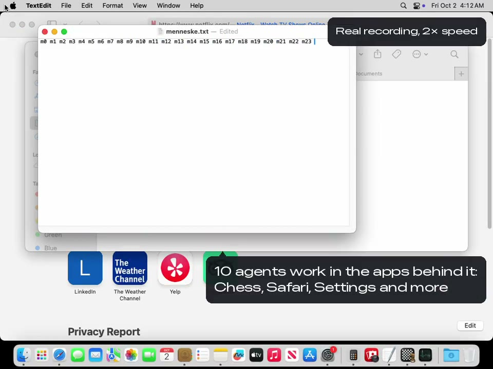

Your agent uses your Mac like you do.
Free and local. Ten agents can work in the windows behind yours while you keep typing.
claude mcp add computer -- npx -y @agent360/computer-mcpMIT-licensed. macOS 14 or later, tested on 15. No account, no server of ours.

- Claude Code
- Claude Desktop
- Cursor
- VS Code
- Copilot
- Codex
Every change is built and tested on a Mac on GitHub before it can land. See the runs.
19 jobs, one test each
What each test did, what the app showed afterwards, and the score for all 19.
Drawn by us as stand-ins. The tests check window titles and on-screen text, not pictures.
All 19 jobs and what passed
Proven: the test passed with the app behind your windows. Partly: it found the window or hit a limit. Not tested yet: it needs your WhatsApp account or a named person.
- ◐Open Chrome: partly (read on our own Mac; the test machine could not open Chrome)
- ✓Open Settings: proven
- ◐Download an app: partly (tried: the App Store only responds when it is in front)
- ✓Play chess: proven
- ✓Open Netflix: proven
- ◐Change the wallpaper: partly (choosing a picture needs a real click)
- ◐Open WhatsApp: partly (read on our own Mac)
- ○Write in WhatsApp: not tested yet (needs your WhatsApp account (a draft was measured once))
- ◐Create a contact: partly (New Card is greyed out behind another window)
- ○Write to people: not tested yet (needs a named person)
- ○Create a group: not tested yet (needs a named person)
- ◐Open the code editor: partly (read on our own Mac)
- ◐Open Activity Monitor: partly (the window opens, but its list can’t be read while the app is hidden)
- ✓Use the Calculator: proven
- ◐Find a file in Finder: partly (found the file, but the app came forward twice and was handed back)
- ✓Maps with an address: proven
- ✓Open Notes: proven
- ◐Open Spotify: partly (opens on our own Mac, may have come forward by itself)
- ✓Open the camera: proven
Where no API reaches
Your agent already gets into most tools through an API. These four only have a window.
Your chats
WhatsApp has no API for your own messages. It can leave a reply as a draft in the message box (measured once on our Mac). Sending stays yours.
The app you are building
It clicks through your app the way a tester would, in a window behind yours, and reports what it can see.
What only lives in a menu
Much of macOS has no button at all. It reads every menu item and its shortcut, then picks the one it needs.
The tool at work
The internal or old desktop app nobody wrote an API for. If VoiceOver can read it, so can your agent.
Why it is safe to leave running
Keep working while it works
It acts in windows behind yours and leaves your pointer where you put it.
No silent failures
When a step fails or is ambiguous, it says so and why.
Your passwords stay yours
Password boxes are blacked out before a screenshot exists. Keychain, 1Password and five other password managers ask every time.
A log you can read back
Every call is written down, typed text only as a fingerprint. Run several agents; the log says which did what.
32 tools: 14 that look, 18 that touch. No shell, no file access, no web fetching, on purpose. See every tool.
Install in two minutes
What you get today, honestly. npx @agent360/computer-mcp currently serves 0.1.0, which has 12 tools. The 32 tools described here are the source: they are built and tested, but not published yet. Building from source takes about thirty-five seconds if you want them now.
Add it to your client
claude mcp add computer -- npx -y @agent360/computer-mcp
Cursor and VS Code: one line in mcp.json. Codex: one command.
Allow two permissions
System Settings › Privacy & Security › Accessibility and Screen Recording.
Ask what it can see
Have your agent run
computer_permissions. It tells you what is missing.
Want to look before it can touch? Start it with CMCP_MODE=readonly. No tool takes
your screen by default; CMCP_BACKGROUND=0 adds the seven that do. An app that pulls itself forward is handed back, and the reply says so.
Guides: Claude Code, Codex,
Cursor, Copilot,
Claude Desktop, VS Code.
The three gates in 27 seconds
An animation, no sound. The log line in it is a real line from a real run.
Honest limits
- macOS only. No Windows or Linux build is planned.
- Not the inside of a web page. For that, use a browser tool.
- Apps that paint everything on a canvas are a blind spot.
- Only fields macOS marks as secure are blacked out. A password in a plain text file is not.
- Consent is not a sandbox. If you need containment, run it in a VM.
Questions
What is an MCP server?
A small program that hands your AI assistant a set of tools. You install it once, and your assistant can do things it could not before. This one hands it your Mac. It runs on your own machine, and your assistant keeps talking to whichever AI you already pay for.
Does anything leave my machine?
No. There is no account, no telemetry and no server of ours involved. Screenshots go to the MCP client you configured, the same place the rest of your conversation goes, and nowhere else. The same rule holds for this website: no analytics, no cookies, no third-party requests. The only <script> tag on the site is application/ld+json structured data, which your browser does not execute. View source and check.
Does it ask me before it does things?
Not for ordinary work: it acts, and every call lands in the log. A few things never happen without a person saying yes: your password manager, anything that deletes or clears, sending a message in the chat and mail apps it recognises, and starting a screen recording. In the default mode they wait in the menu bar icon, which turns orange; a password manager cannot be approved there, so it is refused. If nobody answers, the answer is no.
How is this different from the other macOS MCP servers?
Capability-wise, not enormously: screenshots, clicks, keystrokes, the accessibility tree. The difference is what happens in the hours you are not watching. It works in windows behind the one you are in and leaves your pointer where you put it. It tells you when something failed instead of carrying on as if it worked. Several can run at once. And it will not go near your password manager.
Does it work in Claude Code’s auto mode?
Partly. Auto mode judges every call on its own, so expect some refusals. The tools that take the screen are refused: measured on 1 October, auto mode turned them down even after the person had lent the screen with Touch ID. That is the client’s own guard, not this server’s, and it is right to be careful. To use them, run the session without auto mode and approve each call when Claude Code asks; the gates in this server still apply on top.
Give it a look before you give it your hands.
Start it read-only and ask your agent what it can see. Two minutes.
claude mcp add computer -e CMCP_MODE=readonly -- npx -y @agent360/computer-mcp